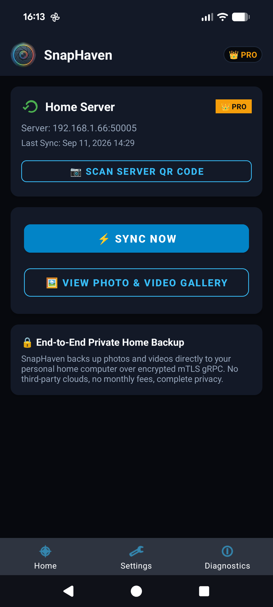
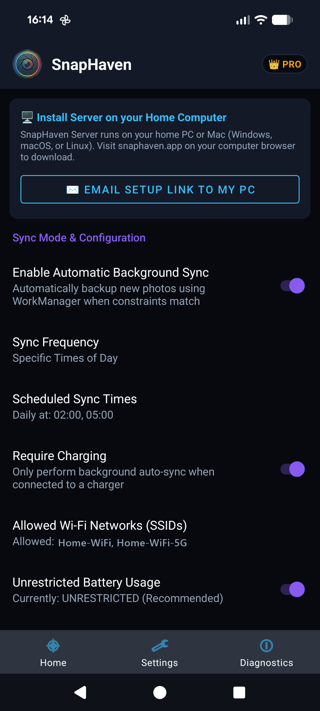
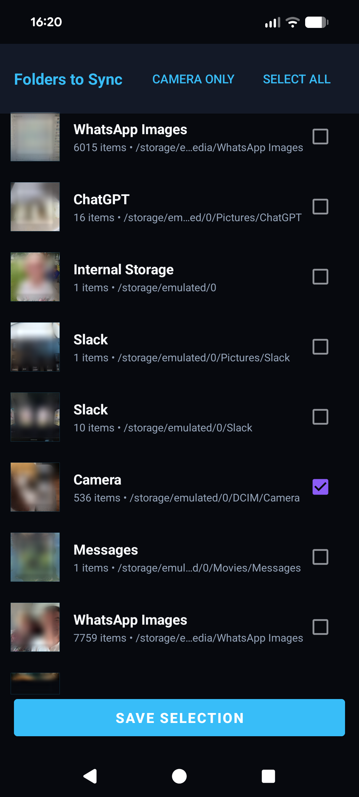

The Recommended Setup Order
Following this sequence ensures your server is broadcasting properly on your local network before connecting your mobile device.
Install & Launch SnapHaven Server
SnapHaven Server acts as your secure photo vault and certificate authority. It must be installed on the PC or NAS where you want photos stored. Choose your platform below:
Install via the Microsoft Store for silent automatic updates, or install via terminal:
Once installed, launch SnapHaven from your Start Menu. A system tray icon will appear, and your pairing dashboard will open in your default browser at https://127.0.0.1:50005.
Download the Universal App bundle (Apple Silicon M1-M4 & Intel) from the Download Page. Extract and clear the quarantine flag if prompted:
SnapHaven will appear in your top menu bar with a camera emblem.
Install the Debian package and enable the systemd daemon for unattended background sync:
Open your web browser to https://localhost:50005 or run snaphaven-server open.
For Docker, Synology NAS, Unraid, or TrueNAS, use Docker Compose. We recommend network_mode: host so the mobile app can discover the server automatically over local mDNS:
Allow Private Network & Firewall Access
Because SnapHaven operates entirely peer-to-peer over your local home Wi-Fi without passing through any external cloud relay, your host operating system's firewall must permit incoming connections from your phone.
-
Verify Your Network is Set to "Private": In Windows 10/11, open
Settings > Network & Internet > Wi-Fi (or Ethernet), click your connected network, and verify the Network Profile Type is set to Private. If it is set to "Public", Windows blocks incoming local traffic. - If You Accidentally Clicked Cancel: Open Windows Defender Firewall with Advanced Security (or search "Allow an app through Windows Firewall"), find SnapHaven Server, click Change Settings, and check the Private box.
- When macOS prompts: "SnapHaven would like to find and connect to devices on your local network", click Allow.
- To double check: Open
System Settings > Privacy & Security > Local Networkand verify SnapHaven Server is toggled ON. - If using the macOS Application Firewall (
System Settings > Network > Firewall), ensure SnapHaven is allowed to receive incoming connections.
If you run UFW or Firewalld, allow inbound traffic on TCP port 50005 and UDP port 5353 (for mDNS network discovery):
- Port Mapping: Ensure port
50005:50005is published if running in bridge mode. - mDNS / ZeroConf Discovery: Because Docker bridge networks isolate multicast traffic, we strongly recommend using
network_mode: host. Alternatively, you can enter your server's LAN IP address directly in the mobile client if automatic discovery is unreachable. - Wi-Fi AP Isolation: Ensure your Wi-Fi router does not have "Client Isolation" or "Guest Network Isolation" enabled, as this blocks phones from reaching LAN PCs.
Install Android App & Pair via mTLS
With the server running and accessible on your Wi-Fi network, pairing your phone takes just one camera scan.
1. Install SnapHaven Mobile
Install SnapHaven on your phone (Android Beta link available on Google Play).
Upon first launch, accept the requested Media & Photos permission (to scan for photos) and Notification permission (required by Android for reliable background sync service).
2. Scan the Server Pairing QR Code
In the mobile app, tap "Scan Server QR Code". Point your camera at the QR code displayed on your computer's SnapHaven dashboard (https://127.0.0.1:50005).
Mastering the Mobile App
Explore all the powerful background synchronization triggers, custom folder pickers, and live diagnostics built into the SnapHaven Android app.
Real-Time Dashboard & Instant Sync
The main screen gives you immediate transparency into your backup state. Watch files synchronize in real time with byte-level progress bars and transfer speeds.
- ✓ One-Tap Sync Now: Immediately flush newly taken photos to your server without waiting for scheduled triggers.
- ✓ Smart Deduplication: SnapHaven computes cryptographic hashes before transfer, ensuring identical files are never uploaded or duplicated twice.
- ✓ Server Connection Pill: Instant visual feedback showing whether your home PC or NAS is reachable on your current network.


Smart Triggers & Battery Respect
SnapHaven runs silently in the background using Android's native WorkManager API. You have full control over when sync operations are allowed to execute:
- ⚡ Charging-Only Sync: Protect your daily battery life by restricting automatic heavy 4K video backups to when your phone is plugged in overnight.
- 📶 Wi-Fi Only Constraint: Completely disable mobile data transfers to prevent exhausting your cellular data plan.
- ⏰ Custom Schedule Window: Set your preferred sync time (e.g. 02:00 AM) so backups happen while you sleep.
- 🔋 Adaptive Foreground Service: Employs an efficient foreground service notification that satisfies Android 13+ background execution rules without draining your standby battery.
Selective Folder & Album Backup
You don't have to sync junk folders. Select exactly which albums and storage directories are included in your private backup:
- 📸 Camera (DCIM): Full original resolution photos, RAW files, dynamic motion photos, and 4K/60fps videos.
- 📱 Screenshots & Screen Recordings: Choose whether to preserve or exclude your screenshots folder.
- 💬 App Media: Easily toggle backup for WhatsApp, Telegram, Signal, and Downloads directories.
- 📂 Custom Local Folders: Add any custom storage directory on internal storage or microSD cards.

In-App Audit & Event Logs
SnapHaven maintains a local, tamper-proof SQLite event log in the app. If a file fails to transfer or a network disconnection occurs, every event is recorded with millisecond timestamps and clear human-readable explanations.
- • Filter logs by Info, Warnings, and Network Errors
- • View exact file paths and byte transfer rates
- • Export diagnostic logs for easy support without exposing private photo data
Built-in Network Diagnostics
Unsure why your server isn't connecting? The built-in Diagnostics tool automatically probes local mDNS responders, verifies socket availability on port 50005, and checks certificate validity.
- • Auto-detects server LAN IP and broadcast hostname
- • Fallback manual IP entry for segregated subnets or VLANs
- • Verifies mutual TLS certificate expiration and validity
Troubleshooting & FAQs
Search for specific issues or filter by topic to find instant solutions for network, battery, and pairing challenges.
Try searching for a different keyword or switch to "All Topics".
If your mobile app says "Server not found" or pairing times out, the most common cause is the Windows Firewall blocking incoming traffic on port 50005 or treating your home Wi-Fi as a "Public" network.
How to fix:
- Check Network Profile: Open Windows
Settings > Network & Internet > Wi-Fi, click your network name, and make sure the Network Profile Type is set to Private network. - Allow App through Firewall: Press Win + R, type
control firewall.cpland press Enter. Click "Allow an app or feature through Windows Defender Firewall" on the left menu. - Click Change settings, find SnapHaven Server in the list, and ensure the Private checkbox is checked. If it is not listed, click Allow another app and browse to SnapHaven's executable.
- Restart SnapHaven Server from the system tray.
Starting in macOS 15 Sequoia, Apple introduced a new privacy permission requiring explicit consent for apps to communicate across your local network.
- Local Network Permission: Open
System Settings > Privacy & Security > Local Networkand make sure SnapHaven Server is enabled. - Gatekeeper Quarantine: If you downloaded the
.tar.gzbundle and macOS displays a warning that the app cannot be opened because it is from an unidentified developer, right-click the app in Finder and choose Open, or runxattr -cr "SnapHaven Server.app"in Terminal.
If you are running SnapHaven Server on Ubuntu, Debian, Fedora, or Arch Linux with an active firewall:
For Fedora/RHEL systems using firewalld:
By default, Docker runs containers on an isolated bridge network (e.g. 172.17.0.0/16). While mapping port -p 50005:50005 allows direct TCP communication, UDP multicast discovery (mDNS on 5353/udp) does not cross the Docker bridge.
Recommended Solution:
- Use
network_mode: hostin yourdocker-compose.ymlso the container shares your host's network stack directly. - If host networking cannot be used (e.g. on Synology Container Manager or macOS Docker Desktop), open the SnapHaven mobile app, tap Diagnostics / Manual Setup, and enter your NAS's static LAN IP address (e.g.
192.168.1.150:50005).
If your phone and server are connected to the same Wi-Fi router but cannot communicate, your router may have AP Isolation, Client Isolation, or Station Isolation enabled.
- Guest Networks: Most routers automatically isolate all guest Wi-Fi devices so they can only access the internet, not other local machines. Make sure both your phone and PC are connected to your main home Wi-Fi network, not the Guest SSID.
- Mesh Systems (Eero, Orbi, Google Nest Wi-Fi): If your PC is plugged into an upstream ISP modem/router and your phone is on a downstream mesh satellite, they may be on different subnets (e.g.
192.168.1.xvs192.168.86.x). Place your ISP modem in Bridge Mode or connect both devices to the same mesh network.
Some phone manufacturers (notably Samsung, Xiaomi, and OnePlus) enforce aggressive power-saving systems that terminate background services when your screen is locked.
Device-Specific Fixes:
- Samsung One UI: Open
Settings > Apps > SnapHaven > Batteryand select "Unrestricted" (not Optimized). Also checkSettings > Battery > Background usage limitsand ensure SnapHaven is NOT in "Sleeping apps" or "Deep sleeping apps". - Google Pixel: Open
Settings > Apps > SnapHaven > App battery usageand change from "Optimized" to "Unrestricted". - Xiaomi / MIUI / HyperOS: Open
Settings > Apps > Manage Apps > SnapHaven. Enable Autostart, and set Battery saver to No restrictions.
On Android 8.0 and above, the Android operating system terminates any app running in the background unless it runs as an official Foreground Service with a user-visible notification.
SnapHaven uses this service to ensure that large 4K video uploads are not killed mid-transfer when your screen turns off.
💡 Can I hide it? Yes! You can long-press the notification on your phone, tap Settings (or the gear icon), and toggle off the specific "Background Sync Status" notification channel. The service will still run with zero interruption.
Yes! SnapHaven Server supports pairing unlimited family mobile devices to the same server.
Any family device on your home Wi-Fi can open the SnapHaven mobile app and scan the QR code displayed on the server dashboard. Each scan performs an automated mutual TLS (mTLS) handshake, issuing a distinct client certificate signed by your server's local Certificate Authority (CA).
Resetting pairings: Because SnapHaven is completely decentralized and keeps zero cloud records, all certificates are stored locally on your machine in the server's certs/ directory. If you ever need to reset all client connections, clearing the certificates directory and restarting the server will generate a fresh CA and require devices to re-scan the QR code.
By default, SnapHaven saves photos into a dedicated snaphaven directory inside your user profile:
- Windows:
%USERPROFILE%\snaphaven(e.g.C:\Users\<Username>\snaphaven) - macOS:
~/snaphaven(e.g./Users/<Username>/snaphaven) - Linux:
~/snaphaven(e.g./home/<Username>/snaphaven) - Docker / NAS: The host folder you mount to container path
/data/photos
💡 Changing Your Storage Folder: You can point SnapHaven to an external hard drive, secondary SSD, or custom path anytime. Open the Server Dashboard at https://127.0.0.1:50005, go to the Settings tab, update the "Sync Storage Folder Path", and click Save & Restart Server.
Organization & Deduplication:
- Byte-for-Byte Preservation: Files are saved in their exact raw binary format, preserving EXIF metadata, GPS geotags, camera lens data, and original video bitrates.
- Deduplication: If you move photos or reinstall the mobile app, SnapHaven performs a SHA-256 hash comparison. It will never overwrite or re-download photos that already exist in your vault.
Ready to Take Back Control?
Download SnapHaven Server today and set up your private, subscription-free photo backup in less than five minutes.